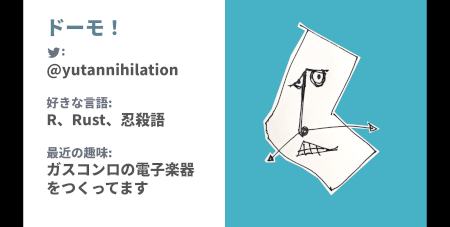

Slidev is a tool to create slides from Markdown. Recently, I used this with R Markdown and it was generally comfortable to use.

That said, there were some points I needed to google around to find solutions, so let me share these in this post.
(You might wonder what this presentation talks about R and Rust, but the contents are all in Japanese, sorry. I’m preparing another blog post for this, so stay tuned!)
Getting started
First of all, we need to create a project that has Slidev installed. This is done by:
npm init slidevThen, you’ll be asked several questions:
❯ npm init slidev
npx: installed 22 in 3.269s
●■▲
Slidev Creator v0.19.6
✔ Project name: … slidev-rmarkdown-test
Scaffolding project in slidev-rmarkdown-test ...
Done.
✔ Install and start it now? … yes
✔ Choose the agent › npm
[ .................] / fetchMetadata: sill pacote version manifest for @nodelib/fs.scandir@2.1.5 fetched in 2883msProject name will be the directory name of the new project, so choose a name that doesn’t exist yet.
After finishing the installation, a web browser is launched and displays the template slides. These slides are generated from slides.md by a local Node.js server. slides.md is located in the top directory of the project created right now.
❯ tree -L 1 slidev-rmarkdown-test
slidev-rmarkdown-test
|-- README.md
|-- components
|-- netlify.toml
|-- node_modules
|-- package-lock.json
|-- package.json
|-- slides.md
`-- vercel.json
2 directories, 6 filesSo, what we should do next is obvious; let’s place slides.Rmd in the same directory so that we can render it to overwrite slides.md. The Node.js server detects the change on slides.md and regenerates slides from it on the fly.
We can stop the server with Ctrl+C on console. To launch again, execute this:
npm run devChoose md_document
First of all, the target we want to generate is a Markdown file, so let’s specify md_document as the output.
---
# R Markdown metadata
title: R Markdown to Slidev
output:
md_document:
variant: "markdown_github"
---Preserve YAML front-matter
What’s a bit tricky here is that Slidev also uses YAML front-matter for defining metadata. So, we need to put both items for R Markdown and those for Slidev together, and preserve it after rendering. Let’s specify preserve_yaml: true.
---
...
md_document:
variant: "markdown_github"
preserve_yaml: true
---Then, put settings for Slidev. There might be some name collision between R Markdown and Slidev, but I don’t find it yet, fortunately. The full YAML would be like this:
---
# R Markdown metadata
title: R Markdown to Slidev
output:
md_document:
variant: "markdown_github"
preserve_yaml: true
# Slidev metadata
theme: seriph
background: ./images/top.gif
class: 'text-center'
highlighter: shiki
info: |
## Use Slidev with R Markdown
Source code can be found on <https://github.com/yutannihilation/slidev-rmarkdown>.
---Per-slide YAML Front-matter
One of the great things with Slidev is that it’s very customizable. Per-slide YAML Front-matter is a good example of this; for example, we can specify layout per slide like this (image is a specific parameter for image-right layout):
---
layout: image-right
image: './images/image.png'
---This will generate a slide like this:

But, the problem is, R Markdown (or probably underlying Pandoc?) seems to allow only one YAML front-matter. So, if we simply write
---
layout: image-right
image: './images/image.png'
---it will just disappear, alas… What can we do??
Well, we can use Pandoc’s raw attribute to bypass the unnecessary conversion.
```{=html}
---
layout: image-right
image: './images/image.png'
---
```Setting Base URL
The base.url chunk option must be specified, otherwise the generated images will be broken. If the slides will be served on the root path (/), the setting should be like this:
::: {.cell}
```{.r .cell-code}
knitr::opts_knit$set(base.url = "/")
```
:::For another example, if the presentation is served under some path like /slides/presentation1, then the base.url should be like this:
::: {.cell}
```{.r .cell-code}
knitr::opts_knit$set(base.url = "/slides/presentation1/")
```
:::Deploy to GitHub Pages
Slidev needs Node.js server to serve the slides, but it can also be exported as an standalone single-page application by the following command:
npm run buildThe generated result goes to dist/, which can be deployed to GitHub Pages.
Slidev also provides PDF export. For more details, please refer to the official document.
Limitations
While Slidev has many cool features, I doubt it can be an R package like revealjs or xaringan, as Slidev requires Node.js to build or run, which is not very portable. So, I’m not sure how useful this post is to R users, but hope you enjoy!